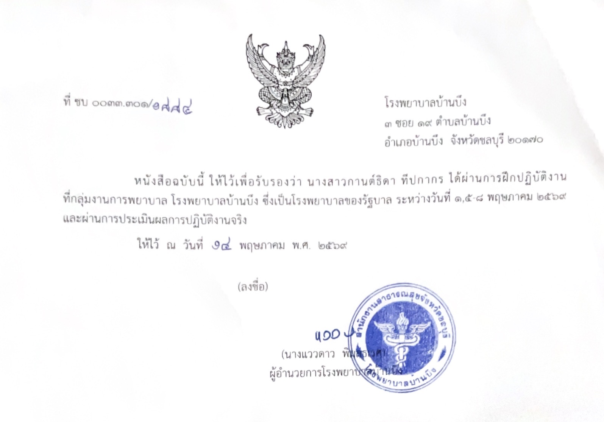
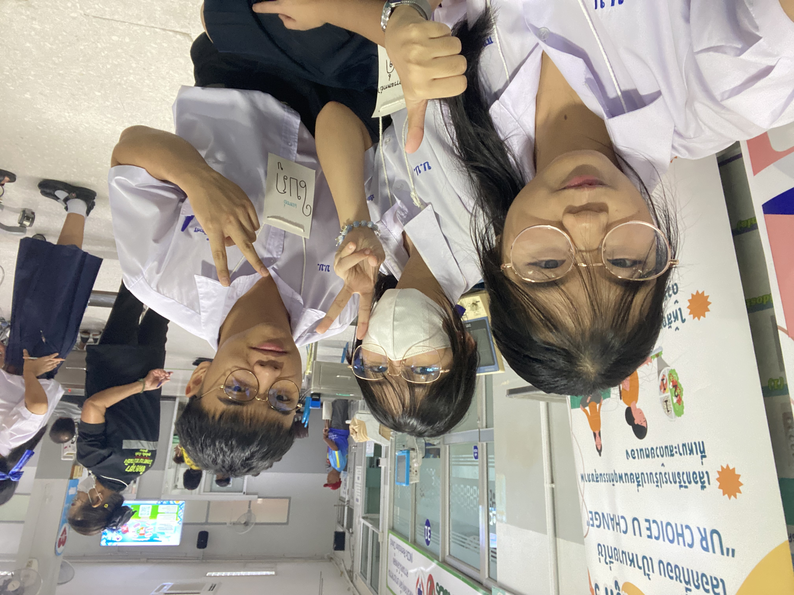

✨ Activities & Experiences 🌟
💜 ประสบการณ์ กิจกรรม และผลงาน 💜
ได้รับรางวัลรองชนะเลิศอันดับ 1 การแข่งขันตอบปัญหาวิทยาศาสตร์ ระดับชั้นมัธยมศึกษาปีที่ 4 และ มัธยมศึกษาปีที่ 5 ในกิจกรรมสัปดาห์วิทยาศาสตร์ ณ โรงเรียนบ้านบึง "อุตสาหกรรมนุเคราะห์"
สิ่งสำคัญที่ได้รับ: แสดงถึงความมุ่งมั่นสั่งสมความรู้ทางวิทยาศาสตร์และชีววิทยาอย่างต่อเนื่อง พัฒนาทักษะการคิดวิเคราะห์อย่างเป็นระบบ ซึ่งเป็นพื้นฐานสำคัญในการศึกษาสัตวแพทยศาสตร์


เข้ารับการฝึกปฏิบัติงานจริงและผ่านการประเมินผลการปฏิบัติงาน ณ กลุ่มงานการพยาบาล โรงพยาบาลบ้านบึง (โรงเรียนรัฐบาล)
สิ่งสำคัญที่ได้รับ: ได้เรียนรู้ระบบการทำงานในทางการแพทย์ การดูแลและให้ความช่วยเหลือผู้ป่วย การทำงานร่วมกับทีมบุคลากรทางการแพทย์อย่างมืออาชีพ ฝึกฝนความอดทน ความใจเย็น และจิตวิญญาณของการเป็นผู้ให้บริการทางสาธารณสุข

